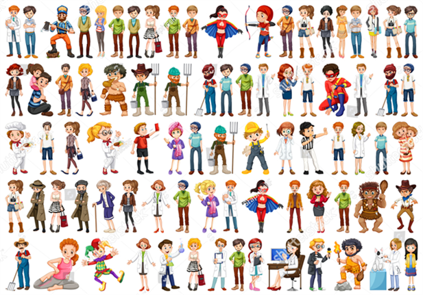
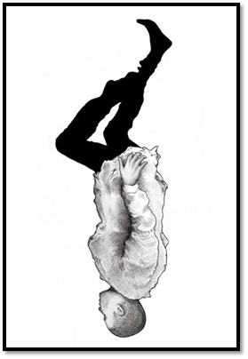

Al principio todo era caos
Observa detenidamente la siguiente imagen:

Selecciona a una de las personas que aparecen allí. Luego, describe detalladamente cómo es, sin mencionar su aparente profesión.
Lee el siguiente texto con mucha atención, luego contesta las preguntas

El drama del desencantado

…el drama del desencantado que se arrojó a la calle desde el décimo piso, y a medida que caía iba viendo a través de las ventanas la intimidad de sus vecinos, las pequeñas tragedias domésticas, los amores furtivos, los breves instantes de felicidad, cuyas noticias no habían llegado nunca hasta la escalera común, de modo que en el instante de reventarse contra el pavimento de la calle había cambiado por completo su concepción del mundo, y había llegado a la conclusión de que aquella vida que abandonaba para siempre por la puerta falsa valía la pena de ser vivida.
FIN
Márquez, G. El drama del desencantado. Ciudad Seva. Recuperado de: https://ciudadseva.com/texto/el-drama-del-desencantado/
Cuéntame
hasta que un día, el guerrero supo que
Son las palabras que acompañan al sustantivo para determinarlo o calificarlo; expresa características o propiedades del sustantivo.
Por ejemplo:
Décimo piso - Pequeñas tragedias -Amores furtivos
Los adjetivos pueden ser femeninos o masculinos y deben concordar con el sustantivo al que acompañan: si el sustantivo es femenino, adjetivo tambien debe serlo.
Por ejemplo;
Los adjetivos tienen dos números: singular y plural.
Siempre concuerdan en numero con el sustantivo al que acompañan. Generalmente, al adjetivo en singular se le agrega -s para formar el plural.
Por ejemplo;
- Pequeña tragedia - Pequeñas tragedias
- Amor furtivo - Amores furtivos
Positivo
Enuncia la cualidad |
Comparativo
Expresa igualdad, inferioridad o superioridad |
Superlativo
Expresa el grado máximo de la cualidad |
| Breve instante |
Tan breve como
Menos breve que
Más breve que |
Brevísimo instante |
| Adjetivo |
Aumentativo |
Diminutivo |
Despectivo |
| Viejo flaco |
Viejote flacote |
Viejito flaquito |
Viejillo flacucho |
Y valeroso se enfrentó a los desafíos
Para el primer reto encontrarás una lista de objetos del texto
“El drama del desencantado”, imagina cómo son esos objetos y escribe qué cualidades crees que tienen:
| ADJETIVOS |
EXPRESAN |
EJEMPLO |
| Calificativos |
Una cualidad |
Pequeña |
| Gentilicios |
Un lugar de origen |
Colombiano |
| Numerales |
Una cantidad u orden |
Séptimo |
| Indefinidos |
Una cantidad imprecisa |
Muchos |
| Demostrativos |
Una ubicación |
Ese-aquél |
| Posesivos |
A quién pertenece el sustantivo |
Mío- suyo |
Las formas que se emplean para los adjetivos posesivos, son las mismas que las que se usan para los pronombres, se diferencian en que los adjetivos posesivos siempre acompañan al sustantivo, en cambio los pronombres están en el lugar del nombre, reemplazándolo.
Por ejemplo:
Pronombre posesivo: Los nuestros fueron a casa.
Adjetivo posesivo: Nuestros familiares fueron a casa.
Escribe un minicuento sobre ti mismo en donde utilices, por lo menos, cuatro clases de adjetivos. Puedes inspirarte en la siguiente imagen y en el texto
“El drama del desencantado”:
Desde entonces, el guerrero entendióque:
• Los adjetivos acompañan al sustantivo para determinarlo o calificarlo.
• A veces se recurre a expresiones como: “tan_____ como”, “menos_____ que”, “más_____ que” para formular comparaciones con adjetivos.
• Los adjetivos siempre deben concordar en género y número con los sustantivos.

Y así hubo orden en el mundo de la gramática.